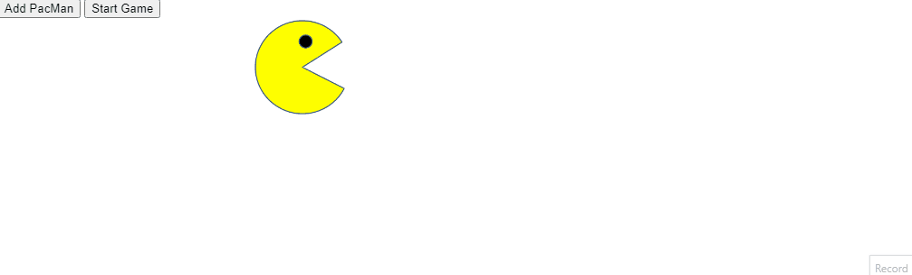

Bus Tracker Project
In this project I was taught how to render markers onto a map of an MiT bus route, by manipulating the DOM. By accessing Mapbox's API, I was able to mark on the map each stop between MiT and Harvard.
Learn MoreEye Exercise
Another exercise done through this MiT course is the Eye Exercise in which we created eyes that would track mouse movement across the page. This was done by manipulating the DOM using the skills we have picked up on javascript and CSS.
Learn More

Pacmen Exercise
For this exercise, we turned to a classic game character, PacMan, and created a digital animation javascript.
Learn more